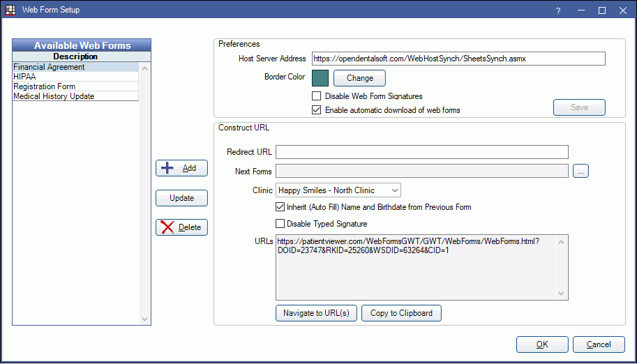
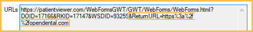
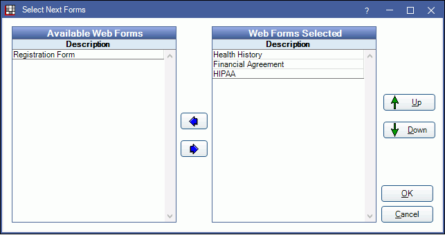
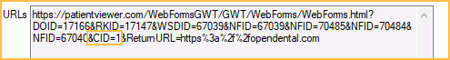
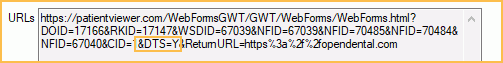

Web Form Setup
Set up web forms to be filled online by patients.
In Web Forms Retrieve, click Setup in the upper left.
Alternatively, in the Main Menu, click Setup, Web Forms.
Available Web Forms
The Available Web Forms grid displays all forms currently uploaded to the Open Dental web server. These forms are available to use online.
Only sheets with a type of PatientForm or MedicalHistory are listed. If there are no custom patient forms or medical histories, the internal versions show.

- Add: Click to add a new form to the available list. The Pick Sheet window will open. Highlight a form, then click OK to upload it.

- Update: When changes have been made to a sheet, the form must be updated to take affect. Highlight the form in the Available grid, then click to update it. Alternatively, web forms in use can be updated immediately after updating the sheet by clicking Yes to the prompt.
- Delete: Highlight a form, then click to delete it from the Available grid. The form will no longer be available for online use.
Preferences
These settings affect every web form uploaded to the web server. Click Save to save any changes to preferences.

- Host Server Address: The address where web forms are hosted. Do not edit this address.
- Border Color: The background color of the Web Form window. Click Change to select a different color.
- Disable Web Form Signatures: Select whether to allow signatures on web forms.
- Checked: Do not allow signatures on any web form. The text "Signature will be recorded later" replaces the signature box. When the patient arrives to the office for their appointment, office staff can retrieve the signature via kiosk, eClipboard, or by printing.
- Unchecked: Allow signatures on all web forms.
- Enable automatic download of web forms: Determines whether web forms automatically download when a patient match is found. The Open Dental Service must be installed and running to utilize this preference.
- Checked: Enable automatic download of web forms. Users must still manually retrieve web forms for patients that do not have a match (e.g., new patients). When enabled, the OpenDentalService checks for retrieval every two minutes.
- Unchecked: Do not enable automatic download of web forms. Users must manually retrieve all web forms.
Construct URL
Build the URL patients will use to access the web form(s). Parameters in the URL also determine options available on the web form. Patients will use the web form URL to access the form via the office website, email, etc.
The settings below are not saved preferences. They only need to be entered once to create the URL used going forward.
To construct a URL, start by highlighting one or more forms under Available Web Forms. Each form selected will generate a unique URL.

- Redirect URL: When patients complete their forms, they can be automatically redirected back to the office website. Enter the full URL (e.g., https://opendental.com) where patients should be redirected to. The URLs area will update to include the redirect code.
-

- Next Forms: Link multiple web forms together. Patients will see a list of all linked forms on the left side of their browser and can click on each one to move from form to form.
- Under Available Web Forms, highlight the first web form user will view.
- Click [...] next to Next Forms.
- The Select Next Forms window will open. 
- Forms listed under Available Web Forms can be added to a URL.
- Forms listed under Web Forms Selected will be added to the URL.
- Highlight a form, then use the Left and Right arrows to move it to the appropriate grid.
- Highlight a form, then use the Up and Down arrows to re-oder forms that display for a patient.
- Do not include the form highlighted in Step 1. The form selected in Step 1 will always be the first form for the patient.
- Click OK. The URLs area will update to include code for the new 'linked' forms (&NFID=12345).

- Clinic: Click the Clinic dropdown to associate a clinic, or click [...] to select from the Clinic List. When a new patient fills out a form and no patient record exists yet, the clinic associated to the web form(s) will be assigned to the patient. This clinic will not override clinic selection on any existing patient records.
-

- Inherit (Auto Fill) Last Name, First Name, and Birthdate from Previous Form: When including Next Forms, auto-fill the last name, first name, and birthdate from the previous form. To turn off this option for web forms in this URL, uncheck this box. &AFNAB=N will be added to the URL.
- Disable Typed Signature: Allow or block patient from typing a signature. By default, patients can type a signature in a web form signature box. To block typing of signatures for web forms in this URL, check this box. &DTS=Y will be added to the URL.
-

- URLs: As the URL is built, the box will update to include the URL code. This is the URL sent to patients via email, or can be used as a link on the office website.
- Navigate to URL(s): Click to open the URL(s) in a browser.
- Copy to Clipboard: Copy the URL.
Details
Every uploaded web form sheet must contain Input Fields for LastName, FirstName, and Birthdate so that the completed, retrieved form can be matched to the correct patient. The Birthdate field should only be used once per sheet. If additional date fields are needed (e.g., insurance effective date), use the Misc input field instead. Forms can be uploaded or deleted from the server at any time without damaging patient records.
Other sheet types, such as PatientLetter or Consent, are not available for use as web forms. Web forms are designed to have information input (i.e., patient is updating information). Patient Letters are designed to have information output (i.e., patient is receiving information). Consents are designed to have information input by the office (e.g., tooth number or procedure).
Only [dateToday] and [dateTodayLong] Static Text Fields will be populated on web forms. As other Static Text Fields are unique to the patient, they will be left blank.